使用 Git 管理实验室代码（中文版）
by Jinyu, v0.2.0 Last modified: 2024.9.24
本文旨在为 Champer Lab 提供基于 Git 的量身定做的代码版本管理方案。
本文假定读者对 UNIX/Linux Shell 命令行有基本的了解。
如您未使用过 Shell 命令行，可参阅此教程，学习常见命令行和 Vim 的使用。
使用 Git 管理实验室代码（中文版）什么是 Git为什么使用 Git准备GitHub 远程仓库配置创建一个 GitHub 仓库上传 “原始代码” 到 GitHub 仓库添加协作者（collaborators）配置主分支保护配置密钥Git 远程管理：与 GitHub 远程仓库交互git clone：从 GitHub 远程仓库获得代码git checkout：创建并切换分支git add 和 git commit：修改代码并提交git push：推送代码到 GitHub 远程仓库希望合并到主分支：发起 Pull Request (PR)查看和合并其他人的修改Git 本地管理：在本地管理代码版本git log：版本管理与回溯git diff：查看代码变化查看未提交的代码更改查看暂存区与工作区的差异比较不同分支的差异新建分支
什么是 Git

Git 是一个开源的、轻量级的版本管理系统，它就像代码的 “时间机器” 或 “快照”。当我们写代码时，Git 会帮助我们保存每一次修改的历史记录。如果出了问题，我们可以随时回到之前的版本，或者看看是谁、在什么时候做了什么修改。
Git 可以跟踪并保存所有的代码修改，用户可以随时知道某段代码是何时、由谁（包括您自己）、因为什么原因改动的。Git 在团队协作中也有重要作用，当多个开发者一起工作时，Git 能让每个人独立地修改代码，最后再把不同的修改合并在一起，避免冲突和混乱。
此外，Git 可以与 GitHub 完美结合。实验室常用 GitHub 仓库托管并开源模型代码，使用 Git 将使得从 GitHub 上下载和上传代码变得更加丝滑。配合使用 GitHub，还能方便地进行代码审查，使工作准确而高效地进行。
Tip
与 SVN 等传统的版本管理工具不同，Git 是分布式的、去中心化的，版本库存储在本地，其功能不依赖于中心服务器。
为什么使用 Git
by ChatGPT 4o
在计算建模和生信数据分析工作中，代码的版本管理至关重要。当前实验室中 “祖传代码” 随意修改的现象会导致代码混乱，难以追踪改动历史、回滚到稳定版本，甚至可能丢失重要的实验成果。缺乏系统的代码管理带来的问题不仅仅是个人的混乱，还可能严重影响整个实验室的工作效率和研究成果的可靠性。例如，多个版本的代码相互覆盖，导致数据分析结果不可重复；某些关键代码被误删或修改，难以找回；在测试阶段改动的个别参数忘记改回，导致在服务器上运行时出现 bug；更严重的是，代码安全和研究成果的完整性也无法得到保障。
使用 Git 进行代码版本管理，可以有效避免这些问题，并带来以下好处：
有序管理代码版本：Git 能帮助我们清晰记录每次修改的具体内容、修改时间以及责任人，确保代码改动透明可追溯，避免 “无名代码” 带来的困惑和失误。
防止代码冲突：团队成员在开发时，可以通过 Git 的分支功能各自进行修改，避免多人同时改动同一文件导致的冲突，减少沟通成本，提高效率。
方便协作与回溯：Git 的版本控制功能让我们在代码修改过程中，可以随时回溯到之前的稳定版本，避免错误积累，确保实验的连续性和可复现性。
与 GitHub 无缝集成：Git 可以直接与 GitHub 远程仓库关联，实验室的代码在 GitHub 平台托管后，修改完成后只需通过
git push命令将本地代码同步到 GitHub，远比手动上传方便快捷，还能实现实时备份、多人协作和代码审查。备份与安全：代码可以被安全地备份到 GitHub 等远程仓库，防止代码丢失，并且为未来的研究提供稳定的参考和数据支持，降低研究数据丢失的风险。
总之，使用 Git 进行代码版本管理，不仅可以提高代码的有序性与稳定性，还可以大幅提升团队的协作效率与研究的可靠性，从而更好地保障实验成果的质量和安全。
准备
以下准备工作针对 Windows 用户，macOS/Linux 用户可直接在终端（shell）中下载并使用 git。
全部使用默认设置安装即可
打开 Git Bash（可在开始菜单中找到）
Tip
Git Bash 允许用户在 Windows 环境下使用大部分 Bash 命令（包括全部的 git 命令）。
您还可以右键单击窗口顶部，在弹出菜单中选择 Options...，可自定义配置 Git Bash。您可在此根据自己的喜好配置界面外观（字体、字号等）和快捷功能。
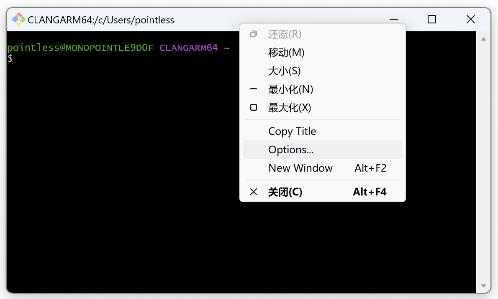
如果您使用 Windows Terminal (Powershell) 或 VSCode，可参阅此文章将它们的默认终端修改为 Git Bash。
GitHub 远程仓库配置
要想使用 Git 进行多人协作，请先按以下方法配置好您的 GitHub 远程仓库。
创建一个 GitHub 仓库
登录 GitHub，在首页上点击左侧的 NEW 来新建一个仓库。
自己设置仓库名称（Repository name），根据需要输入简介（Description）、选择是否创建 README.md。
Caution
在工作发表之前，请将仓库类型设置为 Private（私有仓库），仅指定用户可见/可提交修改。工作发表后，可随时改为 Public。
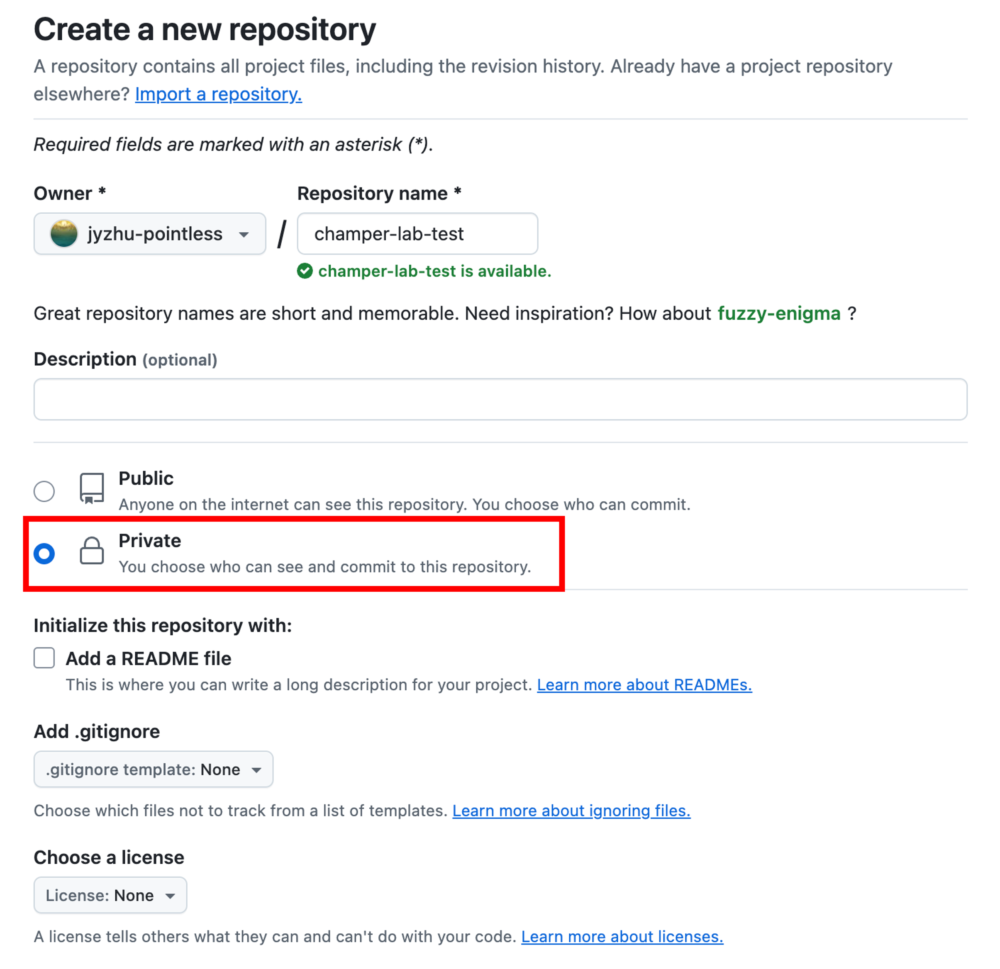
上传 “原始代码” 到 GitHub 仓库
在 GitHub 仓库网页上，从本地上传 “原始代码” 到仓库。
如果仓库是空的，点击下图中的 uploading an existing file 链接上传。
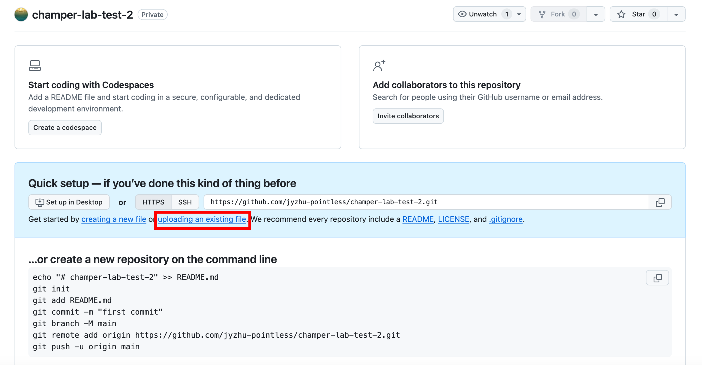
如果仓库中已有文件（比如初始化时选择了生成 README.md），点击下图中的 Add file，然后选择 Upload files 上传。
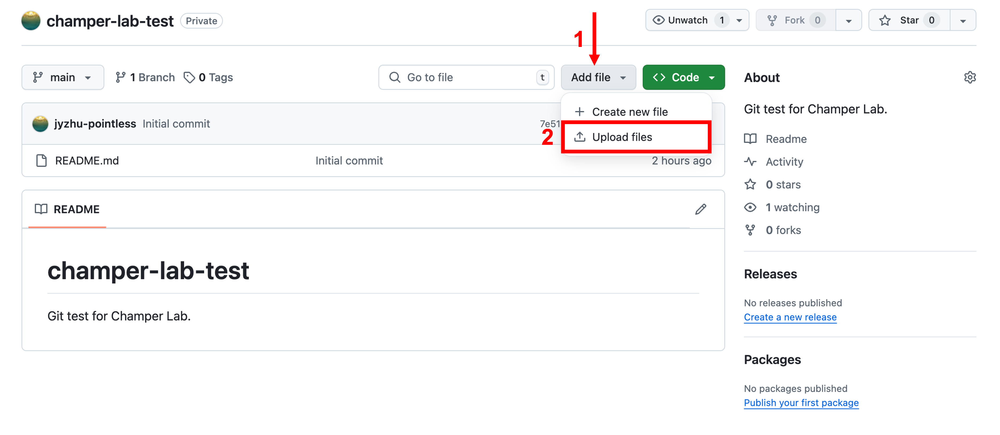
Note
“原始代码” 是指本工作中最通用的代码。
为便于版本管理，建议严格控制 “原始代码” 的份数。
例如，在 Drive-RIDL 项目中，可以以 complete drive 蚊子模型 mosquito.slim 为原始代码。在此基础上，如果需要研究 split drive，可以在此基础上创建分支，修改为 split drive 蚊子模型 mosquito_split.slim。
添加协作者（collaborators）
在仓库中选择 Setting，在左侧栏中选择 Collaborators，然后点击 Add people，输入您想加入的协作者的 GitHub 用户名。
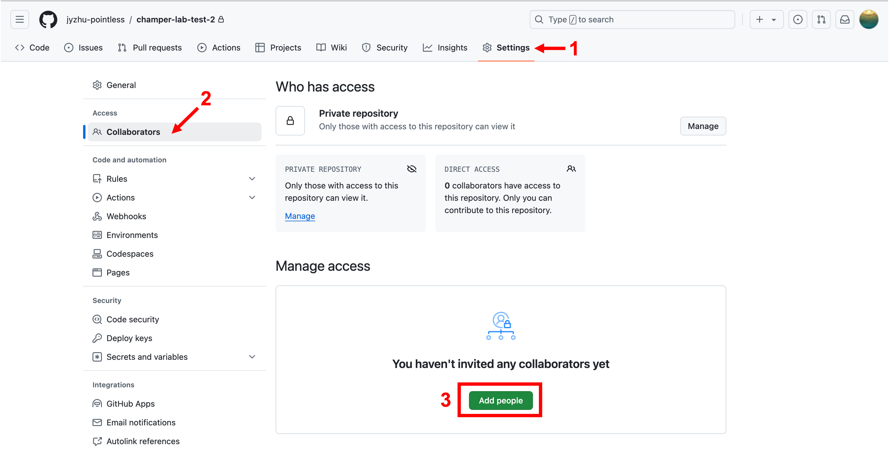
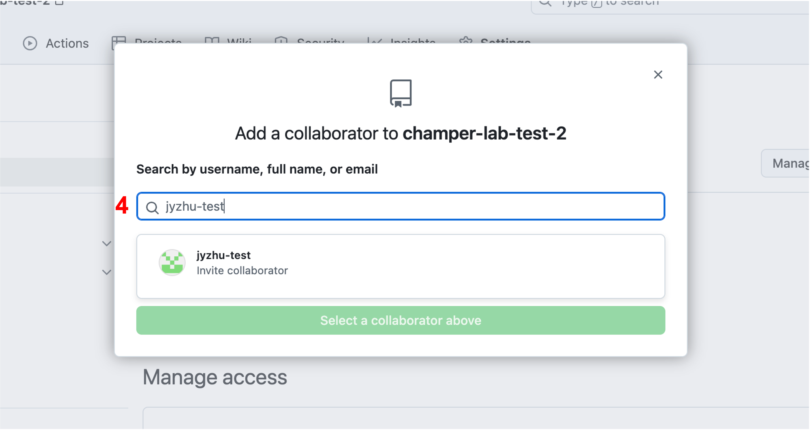
在弹出的列表中选择协作者，然后点击 Select a collaborator above。之后，协作者将收到一封邮件，可在邮件中接受邀请。
配置主分支保护
为了避免协作者直接向主分支（main branch）提交修改，从而覆盖模板代码，可以设置保护主分支，使得协作者对主分支的修改只能通过 Pull Request 进行。
在仓库的设置（Settings）中选择 Branches，点击 Add classic branch protection rule，然后在 Branch name pattern 中输入 main，在下面的Protect matching branches 勾选 Require a pull request before merging 和 Require approvals，然后保存规则。这样，协作者仅能在新的分支中进行修改，而无法直接修改主分支，只能通过 Pull Request 提交修改主分支的申请。
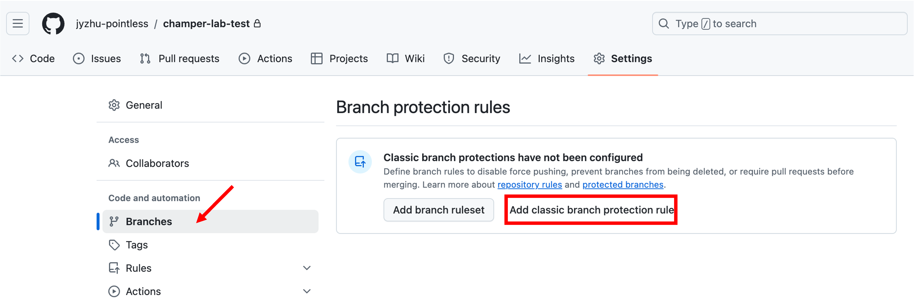
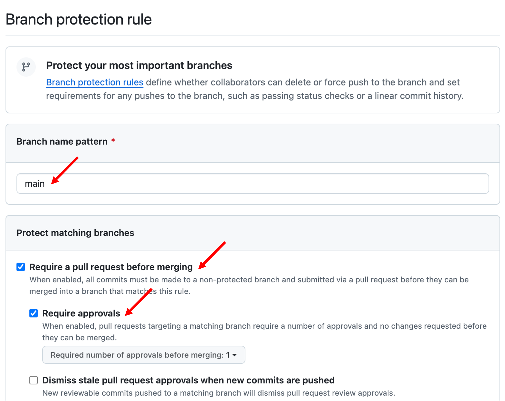
配置密钥
在拉取和提交修改至私有仓库时，密钥是必不可少的。
首先，打开 Git Bash，输入以下命令：
git config --global user.name "your_username" # 配置用户名git config --global user.email "your_email@example.com" # 配置邮箱ssh-keygen -t rsa -C "your_email@example.com" # 生成密钥在 ~/.ssh 目录下将生成密钥文件 id_rsa.pub。打开并拷贝内容到 GitHub/个人/SSH and GPG keys/New SSH key：
cat ~/.ssh/id_rsa.pub点击 Add SSH key，完成配置。
Git 远程管理：与 GitHub 远程仓库交互
git clone：从 GitHub 远程仓库获得代码
每个实验室成员可以从中央 GitHub 仓库克隆代码到本地，进行修改：
git clone <repository_url> # 克隆远程仓库到本地cd <repository_name> # 进入项目文件夹git checkout：创建并切换分支
每个成员在修改代码前，应先创建一个属于自己的分支，避免直接在主分支（main）上工作：
git checkout -b my_branch # 创建并切换到新分支git add 和 git commit：修改代码并提交
在本地分支上进行代码修改后，使用以下命令将修改提交到本地 Git 仓库：
git add . # 将所有改动添加到暂存区git commit -m "描述修改内容" # 提交改动，附上描述信息Important
为便于协作者审阅，请务必使用简明的语言准确描述修改内容。
一个糟糕的描述信息：updated
一个稍好的描述信息：bug fixed
一个更好的描述信息：corrected the population growth function
git push：推送代码到 GitHub 远程仓库
提交完成后，将本地分支推送到 GitHub：
git push origin my_branch # 推送当前分支到远程仓库希望合并到主分支：发起 Pull Request (PR)
推送代码到 GitHub 后，访问 GitHub 仓库创建将 commit 合并至主分支的 Pull Request，并填写说明。
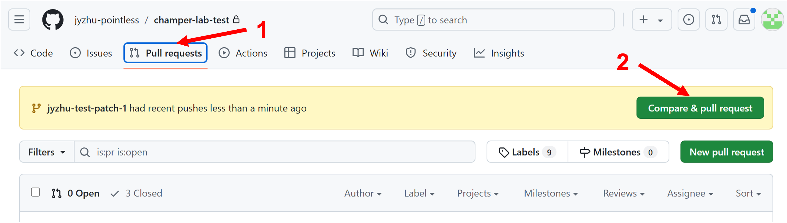
按照上文配置的主分支保护。其他团队成员可以对代码进行审查和讨论，如下图。通过后，合并回主分支。
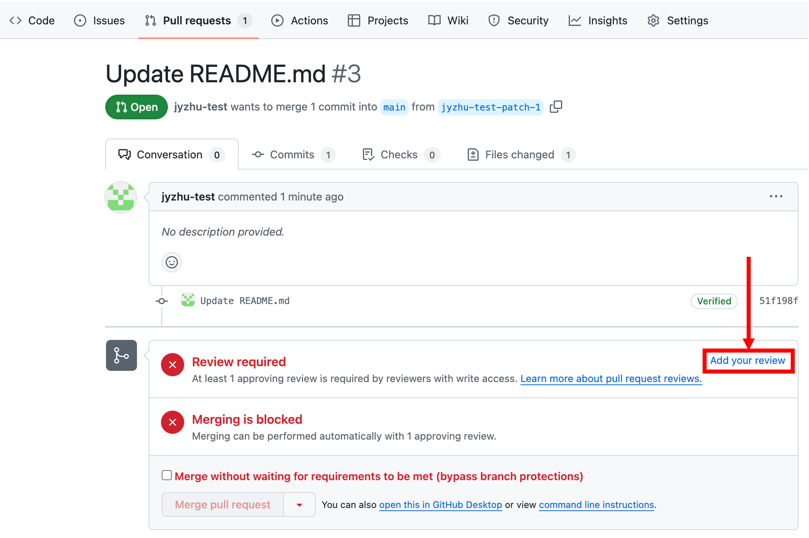
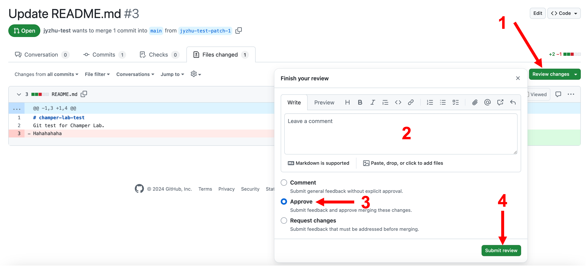
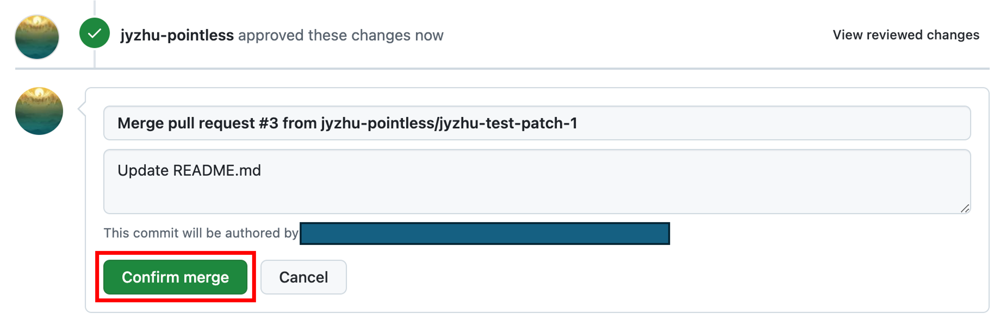
查看和合并其他人的修改
主分支上的代码可能会更新，为了保持本地代码的同步，定期拉取主分支的最新修改：
git checkout main # 切换回主分支git pull origin main # 拉取远程主分支的最新修改合并其他分支到主分支时：
git merge my_branch # 合并自己的分支到主分支Git 本地管理：在本地管理代码版本
git log：版本管理与回溯
您可以通过 git log 查看代码的历史版本，并使用 git checkout <commit_hash> 切换到特定的历史版本进行调试和回溯。<commit_hash> 为该历史版本的哈希值。
git diff：查看代码变化
git diff 既可用于自我检查，又可用于对比协作者产生的不同分支。
查看未提交的代码更改
在本地进行代码修改后，可以使用 git diff 查看您在当前分支上修改了哪些文件，以及具体的修改内容。这有助于在提交前检查是否有遗漏或错误。
xxxxxxxxxxgit diff # 显示工作区中的代码更改查看暂存区与工作区的差异
如果您已经使用 git add 将更改添加到了暂存区，但还没有提交，您可以使用 git diff --staged 查看暂存区中的代码和工作区代码之间的差异。这样您可以确认提交的内容是否正确。
xxxxxxxxxxgit diff --staged # 比较已暂存的修改和上一次提交的区别比较不同分支的差异
在您创建了新的分支并对代码进行了修改之后，git diff 可以用来比较两个分支之间的差异，帮助您了解当前分支与主分支的具体修改内容。这对于合并分支前的代码审查非常重要。
xxxxxxxxxxgit diff main my_new_branch # 比较主分支与当前分支的差异新建分支
您可以创建多个分支来管理本地代码的不同版本（如进行不同的实验或测试），并在不同分支间自由切换：
xxxxxxxxxxgit checkout -b experiment_v2 # 创建新分支管理不同的代码版本通过这种流程，Git 可以帮助团队实现高效的多人协作，同时也方便个人管理本地代码的不同版本和追溯他人的修改。